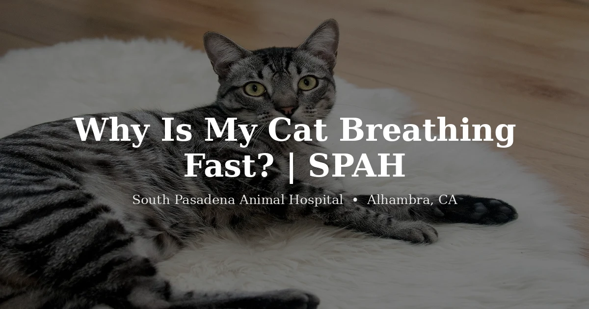

October 14, 2026 · 7 min read
Why Is My Cat Breathing Fast?

Cats are the quietest patients we treat, and nowhere is that more true than with their lungs and heart. A cat can carry serious disease for a long time while looking, to the untrained eye, completely fine. So when an owner notices their cat breathing fast, our ears go up, because in cats, that one sign can mean more than it would in a dog. The good news is that there's a simple check you can do at home that gives us real information, and we'll get to it.
First, the baseline. A calm cat, resting or asleep, breathes somewhere around 15 to 30 times a minute, smoothly and without much effort. That's the yardstick everything else gets measured against.
The one home check worth knowing
Here's a tool we wish every cat owner had in their pocket: the sleeping respiratory rate. While your cat is really asleep, not purring, not dozing with one eye on you, count how many breaths it takes in 30 seconds (one rise and fall of the chest is one breath) and double it. A healthy sleeping cat sits comfortably under about 30. A sleeping cat that's consistently breathing faster than 30 is one of the earliest, most reliable red flags we have for fluid building up around the lungs, and it's exactly the kind of thing that lets us catch heart disease before a crisis. If you ever want a number to tell us over the phone, that's the one.
The reasons that usually settle on their own
Not every fast-breathing moment is a crisis. A cat that just tore around the house, got worked up at the carrier, or is sitting in a hot room can breathe quickly for a little while, and here in the San Gabriel Valley, a stuffy summer afternoon does it. The test is whether it resolves. A healthy cat that was just stressed or hot slows back to normal within a few minutes once it calms down and cools off. If it does, you were watching a normal response, not a sick cat.
The reasons we take seriously
This is where cats earn their reputation for hiding things, so we pay close attention.
Heart disease
Cats are maddening about heart disease. They often show nothing at all until fluid starts backing up into or around the lungs, and then the first thing many owners notice is faster breathing at rest. That's why the sleeping respiratory rate matters so much. It can surface a problem while the cat still looks fine on the outside.
Asthma and other lung disease
Feline asthma is real and more common than people expect. Alongside fast breathing you might hear wheezing, or see a crouched posture with the neck extended and a distinctive cough that owners often mistake for trying to bring up a hairball. Infections and other lung conditions can drive up the rate too. None of these sort themselves out.
Pain, fever, anemia, and more
Fast breathing is also a general stress signal in the body. It can ride along with pain, a fever, significant anemia, or other internal illness. The common thread is that you can't tell these apart by watching, which is the whole reason a cat breathing fast without an obvious, passing cause belongs in front of a vet.
The line that means go now
Some breathing is an emergency, full stop, and cats give us specific tells. A cat that is panting or breathing with its mouth open while at rest is not normal. Unlike dogs, healthy cats simply don't pant. The same urgency applies to gums that look blue, grey, or pale, to obvious effort with the belly heaving on each breath, and to a cat sitting hunched with its neck stretched out and elbows held away from its body, fighting for air. If you see any of these, seek veterinary care immediately. Your regular vet during the day, or an emergency hospital after hours. Don't put it in the car for a morning appointment; this is a now problem.
When to pick up the phone
Reach out to a vet if your cat:
- Has a sleeping breathing rate consistently over about 30 breaths a minute
- Is breathing fast at rest without a clear, passing reason like heat or play
- Is wheezing, coughing, or breathing in a crouched, neck-extended posture
- Is breathing fast along with not eating, hiding, or low energy
And treat panting or open-mouth breathing at rest, pale or blue gums, or obvious struggling as an immediate emergency. We see cats at our cat vet in Alhambra, and a breathing concern is one we'd always rather check sooner than later. Our guide to the signs a cat is sick covers the subtler clues cats give, and our pricing page lays out what an exam involves.
Frequently Asked Questions
What is a normal breathing rate for a cat?
A resting or sleeping cat usually breathes about 15 to 30 times a minute, calmly and evenly. Count breaths while your cat sleeps (one rise and fall = one breath). A sleeping cat consistently over about 30 is worth a vet's attention. It can be an early sign of fluid around the lungs.
Do cats pant like dogs?
Not normally. Healthy cats almost never pant. A cat may briefly open-mouth breathe after hard play, intense stress, or extreme heat and settle quickly, but panting or open-mouth breathing at rest is not normal and should be treated as an emergency.
Why is my cat breathing fast while resting or sleeping?
That's the kind that worries us most, because it can be an early sign of heart disease or fluid in the chest. Conditions cats are famous for hiding until they're advanced. If your sleeping cat's rate is consistently elevated, have it checked promptly.
When is fast breathing in a cat an emergency?
Seek veterinary care immediately, including an emergency hospital after hours, if your cat is panting or open-mouth breathing at rest, has blue, grey, or pale gums, is breathing with obvious effort or belly heaving, or is stretching its neck out with elbows held away from the body. Those signal serious respiratory distress.